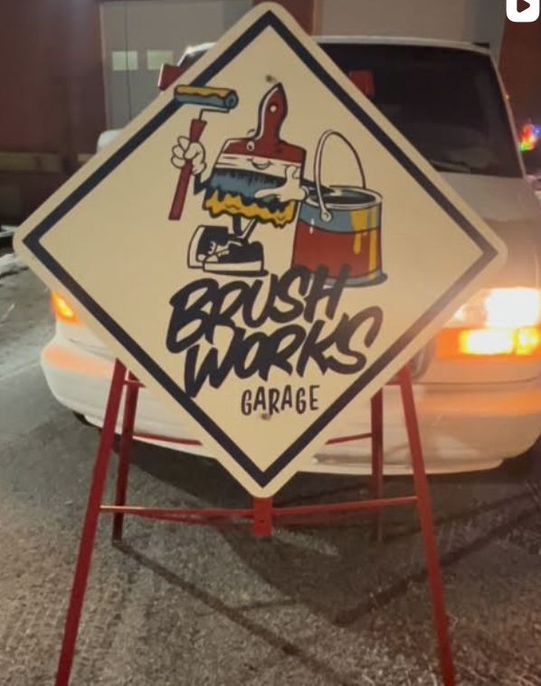

Collective work
Room for a rotating front wall
The home page gives the group a flexible grid for featured work, detail shots, process images, and studio installation photos.
Paint on the walls, people in the room, energy in motion
This concept turns the collective into a digital clubhouse: a place to feature new work, spotlight each artist, and keep the event calendar feeling active between openings.

Collective work
The home page gives the group a flexible grid for featured work, detail shots, process images, and studio installation photos.
Artist roster
Portrait placeholders, medium tags, and short statements make it easy to add artists one by one as the collective grows.
Event-ready
The events section is designed for real dates, RSVP links, recurring gatherings, and flyer art when you have it.
The collective
Paint rack
These are intentionally not fake finished artworks. Each card tells you exactly what kind of real image should replace it.
Resident roster
I kept these as polished placeholders so the page still feels alive while making it obvious what content needs to be added.
Painter slot
Replace this with a short statement about medium, themes, and what kind of work this artist is showing right now.
Mixed media slot
This card works well for artists who combine paint, paper, assemblage, found objects, or installation pieces.
Muralist slot
Use this one for anyone whose work is large-scale, public, collaborative, or tied to walls and site-specific painting.
Print or drawing slot
This layout also works for illustrators, printmakers, and artists making smaller flat works that deserve a dedicated home in the collective.
Experimental slot
Keep one card open for artists who move between mediums or use the space in a less traditional way.
Guest artist slot
This final card is handy for rotating guests, collaborators, workshop leaders, or artists joining for a single event.
Calendar wall
The filter buttons work already, so once you swap in real event data this section can immediately help people browse what is happening in the space.
Open studio template
Replace with the real date, RSVP link, and a sentence about what people can expect in the studio that evening.
Workshop template
Ideal for beginner-friendly classes, artist demos, or a focused making session with a guest lead.
Show template
Use this card for opening receptions, pop-up exhibits, or a spotlight night for one artist in the collective.
Community template
Good for community programming, conversation-based nights, and smaller gatherings that keep the studio active.
Pull up
Add studio address here
Add open studio hours or event-based availability
Add handle, ticket link, or email contact
Space mood
The sign image works well as a recurring anchor throughout the site until you collect more photography from inside the studio.